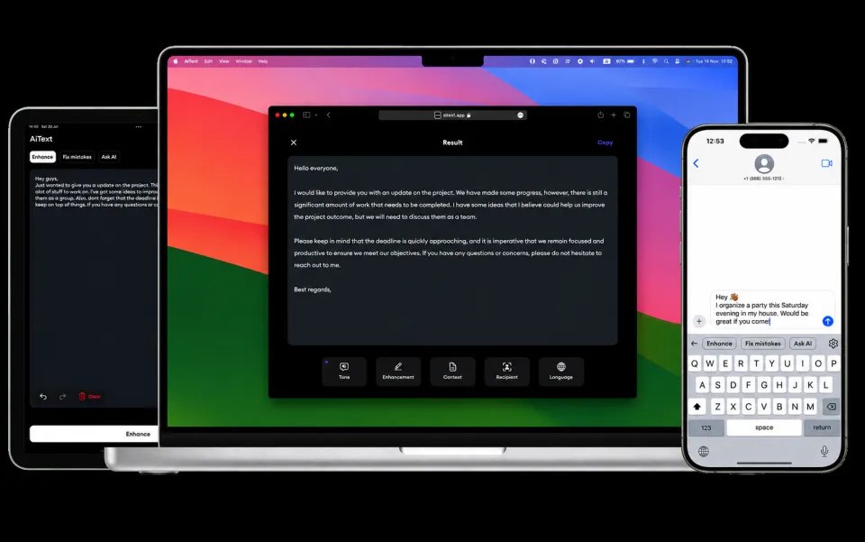
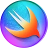
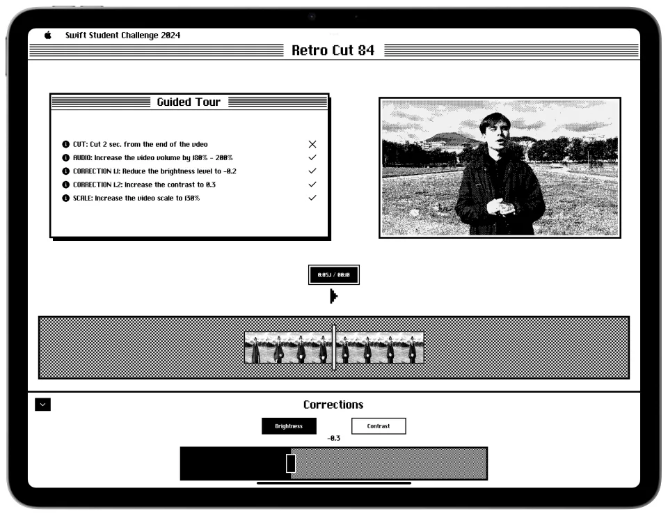
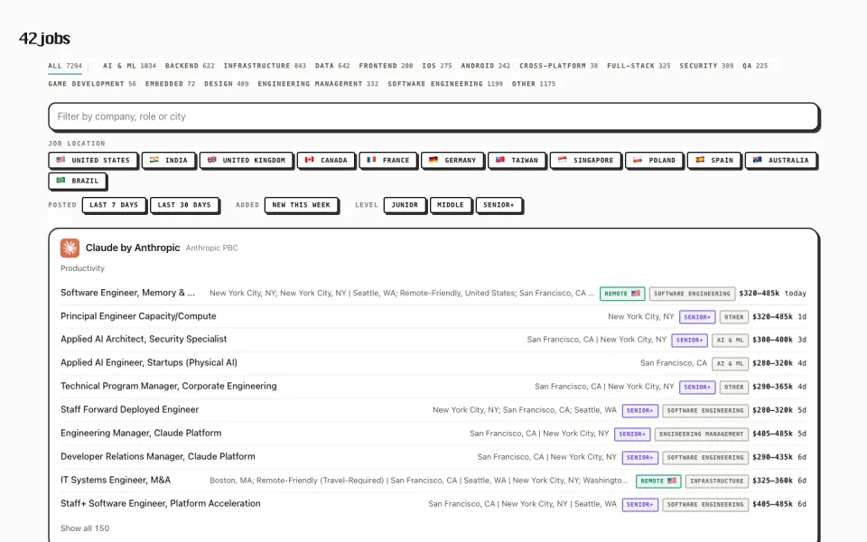

iOS-разработчик · студент СПбГУПТД
Иван Вислов
Делаю приложения для iPhone на Swift и SwiftUI: от дизайн-системы до релиза в App Store.

Победитель Swift Student Challenge 2026- Apple Developer Academy, Неаполь
- AiText: больше 60 000 пользователей
01
О себе
Я iOS-разработчик. С июля 2023 по март 2026 года в небольшой команде делал три продукта для App Store: AiText, Lumen и ComponentsKit. Отвечал за функции целиком: требования, дизайн взаимодействия, состояние, релиз и поддержку после выхода.
Больше всего люблю интерфейсы, которые отзываются на каждое действие: анимации, дизайн-системы, доступность. Больше пяти лет монтирую видео в Final Cut Pro.
Сейчас учусь на пятом курсе СПбГУПТД и пишу диплом: приложение «Ровно», которое следит за осанкой.
- пользователей AiText
- 60 000+
- средняя оценка AiText в App Store
- 4,8
- звёзд у ComponentsKit на GitHub
- 180+
02
Опыт и образование
-
Июль 2023 · март 2026
iOS-разработчик
Небольшая команда, три продукта в App Store: AiText, Lumen, ComponentsKit. Модульная архитектура на TCA и Tuist, подписки, аналитика, тесты на XCTest.
-
Сентябрь 2023 · июнь 2024
Apple Developer Academy
Университет Неаполя имени Федерико II, Италия. Разработка приложений, UX и UI-дизайн, управление проектами.
-
Сейчас · 5 курс
СПбГУПТД
Санкт-Петербургский государственный университет промышленных технологий и дизайна. Computer Science in Design, средний балл 4,7.
-
2026
Swift Student Challenge
Победитель ежегодного конкурса Apple для студентов-разработчиков.
03
Навыки
iOS
Архитектура и инструменты
Дизайн
Веб, изучаю на курсе
04
Проекты
Продукты, которые делал в команде, и личные и учебные проекты.
Показано 6 из 6
Lumen
Продукт · App Store
Генератор портретов с ИИ: превращает фото в мультфильм, живопись или реалистичный студийный портрет за несколько секунд.
Сделан с нуля: загрузка фото, генерация с прогрессом, сравнение «до и после», экспорт

RetroCut84
Личный проект
Видеоредактор в стиле первого Macintosh 1984 года, сделан к 40-летию Mac: обрезка клипов, звук, эффекты и встроенный урок монтажа.
Интерфейс нарисован заново по мотивам оригинальной системы

42jobs
Личный проект · веб
Каталог вакансий в компаниях, чьи приложения стоят в топ-чартах App Store. Больше 7 000 вакансий, фильтры по стране, уровню и направлению.
Статический сайт без фреймворков, отсюда и стиль этого портфолио
«Ровно»
Учебный · дипломный проект
iOS-приложение, которое следит за осанкой по датчикам движения в наушниках AirPods и напоминает выпрямиться. Есть режимы сессии, тренировки и разминки.
В разработке, дипломный проект в СПбГУПТД
Ничего не нашлось. Попробуйте другую категорию или другой запрос.
05
Контакты
Открыт к предложениям по iOS-разработке и совместным проектам. Быстрее всего отвечаю на почту.
Резюме, PDF на английском